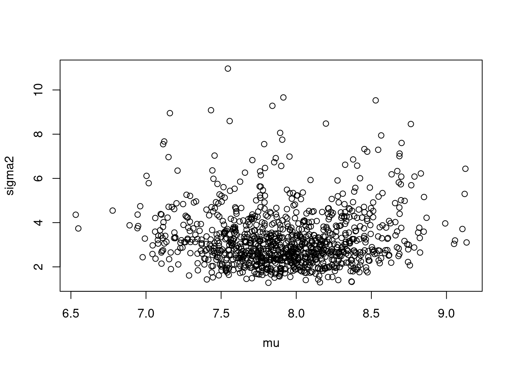
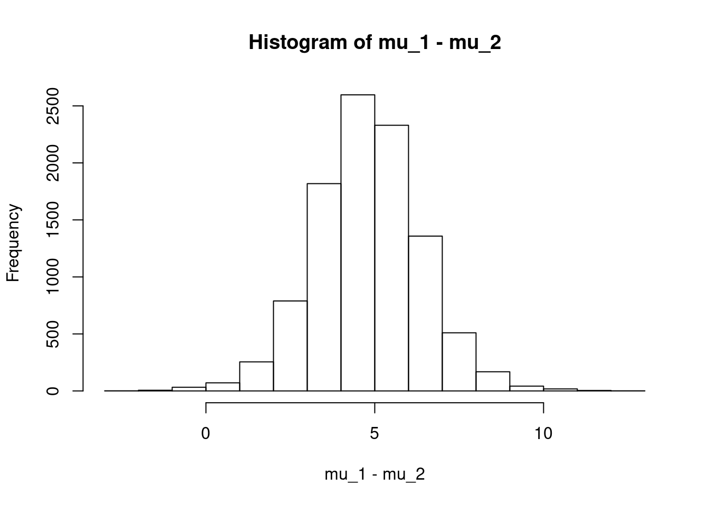

set.seed(29)library(LearnBayes)\[ y_1, y_2, \ldots, y_{20} \sim \mathcal{N}(\mu, \sigma^2) \]
データとしては、以下が与えられている．
y = c(9.0, 8.5, 7.0, 8.5, 6.0, 12.5, 6.0, 9.0, 8.5, 7.5, 8.0, 6.0, 9.0, 8.0, 7.0, 10.0, 9.0, 7.5, 5.0, 6.5)
y## [1] 9.0 8.5 7.0 8.5 6.0 12.5 6.0 9.0 8.5 7.5 8.0 6.0 9.0 8.0 7.0 10.0 9.0 7.5 5.0 6.5length(y)## [1] 20無情報事前分布として、\(g(\mu, \sigma^2) \propto \frac{1}{\sigma^2}\) とすると、
\[ \begin{aligned} g(\mu, \sigma^2|y) &\propto \frac{1}{\sigma^2} \prod_{i = 1}^n \mathcal{N}(\mu, \sigma^2) \\ &= \frac{1}{\sigma^2} \prod_{i = 1}^n \frac{1}{\sqrt{2\pi}\sigma} \exp \left( - \frac{1}{2\sigma^2} (y_i - \mu)^2 \right) \\ &\propto \frac{1}{(\sigma^2)^{\frac{n}{2}+1}} \exp \left( \sum_{i = 1}^n - \frac{1}{2\sigma^2} (y_i - \mu)^2 \right) \\ &\propto \frac{1}{(\sigma^2)^{\frac{n}{2}+1}} \exp \left( - \frac{1}{2\sigma^2} \sum_{i = 1}^n (y_i + \bar{y} - \bar{y} - \mu)^2 \right) \\ &\propto \frac{1}{(\sigma^2)^{\frac{n}{2}+1}} \exp \left( - \frac{1}{2\sigma^2} \sum_{i = 1}^n \left( (y_i - \bar{y})^2 +2(y_i - \bar{y})(\bar{y} - \mu) + (\bar{y} - \mu)^2 \right) \right) \\ &\propto \frac{1}{(\sigma^2)^{\frac{n}{2}+1}} \exp \left( - \frac{1}{2\sigma^2} \sum_{i = 1}^n \left( (y_i - \bar{y})^2 \right) + 2n(\bar{y} - \bar{y})(\bar{y} - \mu) + n(\bar{y} - \mu)^2 \right) \\ &\propto \frac{1}{(\sigma^2)^{\frac{n}{2}+1}} \exp \left( - \frac{1}{2\sigma^2} (\sum_{i = 1}^n (y_i - \bar{y})^2 + n(\mu - \bar{y})^2) \right) \end{aligned} \]
となる． ここで、
\[ \begin{aligned} g(\mu|y, \sigma^2) &= \frac{g(\mu, \sigma^2|y)}{g(\sigma^2|y)} \\ &\propto g(\mu, \sigma^2|y) \\ &\propto \frac{1}{(\sigma^2)^{\frac{n}{2}+1}} \exp \left( - \frac{1}{2\sigma^2} (\sum_{i = 1}^n (y_i - \bar{y})^2 + n(\mu - \bar{y})^2) \right) \\ &\propto \exp \left( - \frac{1}{2\sigma^2} (\sum_{i = 1}^n (y_i - \bar{y})^2 + n(\mu - \bar{y})^2) \right) \\ &\propto \exp \left( - \frac{1}{2\sigma^2} n(\mu - \bar{y})^2 \right) \\ &\propto \exp \left( - \frac{1}{2(\frac{\sigma}{\sqrt{n}})^2} (\mu - \bar{y})^2 \right) \\ \end{aligned} \]
である． よって、
\[ g(\mu|y, \sigma^2) = \mathcal{N}(\bar{y}, (\frac{\sigma}{\sqrt{n}})^2) \]
また、
\[ \begin{aligned} g(\sigma^2|y) &= \int g(\mu, \sigma^2|y) d\mu \\ &= \int \frac{1}{(\sigma^2)^{\frac{n}{2}+1}} \exp \left( - \frac{1}{2\sigma^2} (\sum_{i = 1}^n (y_i - \bar{y})^2 + n(\mu - \bar{y})^2) \right) d\mu \\ &= \frac{1}{(\sigma^2)^{\frac{n}{2}+1}} \int \exp \left( - \frac{1}{2\sigma^2} (\sum_{i = 1}^n (y_i - \bar{y})^2 + n(\mu - \bar{y})^2) \right) d\mu \\ &= \frac{1}{(\sigma^2)^{\frac{n}{2}+1}} \exp \left( - \frac{1}{2\sigma^2} \sum_{i = 1}^n (y_i - \bar{y})^2 \right) \int \exp \left( - \frac{1}{2\sigma^2} n(\mu - \bar{y})^2 \right) d\mu \\ &\propto \frac{1}{(\sigma^2)^{\frac{n}{2}+1}} \exp \left( - \frac{1}{2\sigma^2} \sum_{i = 1}^n (y_i - \bar{y})^2 \right) \int \exp \left( - \frac{1}{2(\frac{\sigma}{\sqrt{n}})^2} (\mu - \bar{y})^2 \right) d\mu \\ \end{aligned} \]
ここで、
\[ \int \exp \left( - \frac{1}{2(\frac{\sigma}{\sqrt{n}})^2} (\mu - \bar{y})^2 \right) d\mu \]
は、\(\mathcal{N}(\bar{y}, (\frac{\sigma}{\sqrt{n}})^2)\) の正規化項に相当するので、
\[ \int \exp \left( - \frac{1}{2(\frac{\sigma}{\sqrt{n}})^2} (\mu - \bar{y})^2 \right) d\mu = \sqrt{2\pi(\frac{\sigma}{\sqrt{n}})^2} = \sqrt{\frac{2\pi\sigma^2}{n}} \]
である．
\[ \begin{aligned} g(\sigma^2|y) &\propto \frac{1}{(\sigma^2)^{\frac{n}{2}+1}} \exp \left( - \frac{1}{2\sigma^2} \sum_{i = 1}^n (y_i - \bar{y})^2 \right) \int \exp \left( - \frac{1}{2(\frac{\sigma}{\sqrt{n}})^2} (\mu - \bar{y})^2 \right) d\mu \\ &= \frac{1}{(\sigma^2)^{\frac{n}{2}+1}} \exp \left( - \frac{1}{2\sigma^2} \sum_{i = 1}^n (y_i - \bar{y})^2 \right) \sqrt{\frac{2\pi\sigma^2}{n}} \\ &\propto \frac{\sigma}{(\sigma^2)^{\frac{n}{2}+1}} \exp \left( - \frac{1}{2\sigma^2} \sum_{i = 1}^n (y_i - \bar{y})^2 \right) \\ &= \frac{1}{(\sigma^2)^{\frac{n}{2}+1-\frac{1}{2}}} \exp \left( - \frac{1}{2\sigma^2} \sum_{i = 1}^n (y_i - \bar{y})^2 \right) \\ &= \frac{1}{(\sigma^2)^{\frac{n-1}{2}+1}} \exp \left( - \frac{1}{2\sigma^2} \sum_{i = 1}^n (y_i - \bar{y})^2 \right) \\ &= (\sigma^2)^{-\frac{n-1}{2}-1} \exp \left( - \frac{1}{2\sigma^2} \sum_{i = 1}^n (y_i - \bar{y})^2 \right) \\ &= (\sigma^2)^{-\frac{n-1}{2}-1} \exp \left( - \frac{1}{2\sigma^2} S \right) \\ &= (\sigma^2)^{-\frac{n-1}{2}-1} \exp \left( - \frac{1}{2}\frac{1}{\frac{\sigma^2}{S}} \right) \\ &\propto (\frac{\sigma^2}{S})^{-\frac{n-1}{2}-1} \exp \left( - \frac{1}{2}\frac{1}{\frac{\sigma^2}{S}} \right) \\ \end{aligned} \]
よって、\(\frac{\sigma^2}{S}\) は 逆カイ二乗分布 に従う．
\[ \frac{\sigma^2}{S} \sim InvChiSquare(n-1) \]
\[ g_{\mu,\sigma^2}(\mu, \sigma^2|y) = g_{\mu|\sigma^2}(\mu|\sigma^2, y)g_{\sigma^2}(\sigma^2|y) \]
であるので、以下のようなアルゴリズムでサンプリングが可能である．
\[ \begin{aligned} \frac{\sigma^2}{S} &\sim InvChiSquare(n-1) \\ \mu &\sim \mathcal{N}(\bar{y}, (\frac{\sigma}{\sqrt{n}})^2) \\ \end{aligned} \]
ここで、\(S = \sum_{i = 1}^n (y_i - \bar{y})^2\) である．
S = sum((y - mean(y))^2)
n = length(y)
sigma2 = S * 1/rchisq(1000, n - 1)
mu = rnorm(1000, mean = mean(y), sd = sqrt(sigma2)/sqrt(n))
plot(mu, sigma2)
quantile(mu, c(0.05, 0.95))## 5% 95%
## 7.209646 8.615881quantile(sqrt(sigma2), c(0.05, 0.95))## 5% 95%
## 1.344823 2.405518p_75 = mu + 0.674 * sqrt(sigma2)
mean(p_75)## [1] 9.116239sd(p_75)## [1] 0.4742668独立した標本が2つあり、それぞれ以下のようになっている．
\[ \begin{aligned} x_1, x_2, \ldots, x_m &\sim \mathcal{N}(\mu_1,\sigma_1^2) \\ y_1, y_2, \ldots, y_n &\sim \mathcal{N}(\mu_2,\sigma_2^2) \\ \end{aligned} \]
事前分布を以下とする．
\[ g(\mu_1, \sigma_1^2, \mu_2, \sigma_2^2) \propto \frac{1}{\sigma_1^2\sigma_2^2} \]
事後密度は以下のように計算できる1．
\[ \begin{aligned} g(\mu_1, \sigma_1^2, \mu_2, \sigma_2^2|x,y) &= \frac{g(\mu_1, \sigma_1^2, \mu_2, \sigma_2^2, x, y)}{g(x, y)} \\ &= \frac{g(x, y|\mu_1, \sigma_1^2, \mu_2, \sigma_2^2)g(\mu_1, \sigma_1^2, \mu_2, \sigma_2^2)}{g(x, y)} \\ &\propto \frac{g(x, y|\mu_1, \sigma_1^2, \mu_2, \sigma_2^2)}{g(x, y)}\frac{1}{\sigma_1^2\sigma_2^2} \\ &\propto g(x|\mu_1, \sigma_1^2, \mu_2, \sigma_2^2) \frac{1}{\sigma_1^2\sigma_2^2} \\ &= g(x|\mu_1, \sigma_1^2)g(y|\mu_2, \sigma_2^2) \frac{1}{\sigma_1^2\sigma_2^2} \\ &= \prod_{i = 1}^m \mathcal{N}(\mu_1, \sigma_1^2) \prod_{i = 1}^n \mathcal{N}(\mu_2, \sigma_2^2) \frac{1}{\sigma_1^2\sigma_2^2} \\ &= \prod_{i = 1}^m \frac{1}{\sqrt{2\pi}\sigma_1} \exp \left( - \frac{1}{2\sigma_1^2} (x_i - \mu_1)^2 \right) \prod_{i = 1}^n \frac{1}{\sqrt{2\pi}\sigma_2} \exp \left( - \frac{1}{2\sigma_2^2} (y_i - \mu_2)^2 \right) \frac{1}{\sigma_1^2\sigma_2^2} \\ &\propto \frac{1}{\sigma_1^m} \exp \left( - \frac{1}{2\sigma_1^2} \sum_{i = 1}^m (x_i - \mu_1)^2 \right) \frac{1}{\sigma_2^n} \exp \left( - \frac{1}{2\sigma_2^2} \sum_{i = 1}^n (y_i - \mu_2)^2 \right) \frac{1}{\sigma_1^2\sigma_2^2} \\ &= \frac{1}{(\sigma_1^2)^{\frac{m}{2} + 1}} \exp \left( - \frac{1}{2\sigma_1^2} \sum_{i = 1}^m (x_i - \mu_1)^2 \right) \frac{1}{(\sigma_2^2)^{\frac{n}{2} + 1}} \exp \left( - \frac{1}{2\sigma_2^2} \sum_{i = 1}^n (y_i - \mu_2)^2 \right) \\ &= \frac{1}{(\sigma_1^2)^{\frac{m}{2} + 1}} \exp \left( - \frac{1}{2\sigma_1^2} \sum_{i = 1}^m (x_i - \bar{x})^2 + m(\mu_1 - \bar{x})^2 \right) \frac{1}{(\sigma_2^2)^{\frac{n}{2} + 1}} \exp \left( - \frac{1}{2\sigma_2^2} \sum_{i = 1}^n (y_i - \bar{y})^2 + n(\mu_2 - \bar{y})^2 \right) \\ &= \frac{1}{(\sigma_1^2)^{\frac{m}{2} + 1}} \exp \left( - \frac{1}{2\sigma_1^2} \sum_{i = 1}^m (x_i - \bar{x})^2 \right) \exp \left( - \frac{1}{2\sigma_1^2} m(\mu_1 - \bar{x})^2 \right) \\ &\times \frac{1}{(\sigma_2^2)^{\frac{n}{2} + 1}} \exp \left( - \frac{1}{2\sigma_2^2} \sum_{i = 1}^n (y_i - \bar{y})^2 \right) \exp \left( - \frac{1}{2\sigma_2^2} n(\mu_2 - \bar{y})^2 \right) \\ &= \frac{1}{(\sigma_1^2)^{\frac{m}{2} + 1}} \exp \left( - \frac{1}{2\sigma_1^2} S_1 \right) \exp \left( - \frac{1}{2\sigma_1^2} m(\mu_1 - \bar{x})^2 \right) \\ &\times \frac{1}{(\sigma_2^2)^{\frac{n}{2} + 1}} \exp \left( - \frac{1}{2\sigma_2^2} S_2 \right) \exp \left( - \frac{1}{2\sigma_2^2} n(\mu_2 - \bar{y})^2 \right) \\ &= \frac{1}{(\sigma_1^2)^{\frac{m}{2} + 1}} \exp \left( - \frac{1}{2\sigma_1^2} S_1 \right) \exp \left( - \frac{1}{2(\frac{\sigma_1}{\sqrt{m}})^2} (\mu_1 - \bar{x})^2 \right) \\ &\times \frac{1}{(\sigma_2^2)^{\frac{n}{2} + 1}} \exp \left( - \frac{1}{2\sigma_2^2} S_2 \right) \exp \left( - \frac{1}{2(\frac{\sigma_1}{\sqrt{n}})^2} (\mu_2 - \bar{y})^2 \right) \\ &= \frac{1}{(\sigma_1^2)^{\frac{m}{2} + 1}} \exp \left( - \frac{1}{2\sigma_1^2} S_1 \right) \mathcal{N}(\bar{x}, (\frac{\sigma_1}{\sqrt{m}})^2) \int \exp \left( - \frac{1}{2(\frac{\sigma_1}{\sqrt{m}})^2} (\mu_1 - \bar{x})^2 \right) d\mu_1 \\ &\times \frac{1}{(\sigma_2^2)^{\frac{n}{2} + 1}} \exp \left( - \frac{1}{2\sigma_2^2} S_2 \right) \mathcal{N}(\bar{y}, (\frac{\sigma_2}{\sqrt{n}})^2) \int \exp \left( - \frac{1}{2(\frac{\sigma_2}{\sqrt{n}})^2} (\mu_2 - \bar{y})^2 \right) d\mu_2 \\ &= \frac{1}{(\sigma_1^2)^{\frac{m}{2} + 1}} \exp \left( - \frac{1}{2\sigma_1^2} S_1 \right) \mathcal{N}(\bar{x}, (\frac{\sigma_1}{\sqrt{m}})^2) \sqrt{\frac{2\pi\sigma_1^2}{m}} \\ &\times \frac{1}{(\sigma_2^2)^{\frac{n}{2} + 1}} \exp \left( - \frac{1}{2\sigma_2^2} S_2 \right) \mathcal{N}(\bar{y}, (\frac{\sigma_2}{\sqrt{n}})^2) \sqrt{\frac{2\pi\sigma_2^2}{n}} \\ &\propto \frac{1}{(\sigma_1^2)^{\frac{m}{2} + 1}} \exp \left( - \frac{1}{2\sigma_1^2} S_1 \right) \mathcal{N}(\bar{x}, (\frac{\sigma_1}{\sqrt{m}})^2) \sigma_1 \\ &\times \frac{1}{(\sigma_2^2)^{\frac{n}{2} + 1}} \exp \left( - \frac{1}{2\sigma_2^2} S_2 \right) \mathcal{N}(\bar{y}, (\frac{\sigma_2}{\sqrt{n}})^2) \sigma_2 \\ &= \frac{1}{(\sigma_1^2)^{\frac{m - 1}{2} + 1}} \exp \left( - \frac{1}{2\sigma_1^2} S_1 \right) \mathcal{N}(\bar{x}, (\frac{\sigma_1}{\sqrt{m}})^2) \\ &\times \frac{1}{(\sigma_2^2)^{\frac{n - 1}{2} + 1}} \exp \left( - \frac{1}{2\sigma_2^2} S_2 \right) \mathcal{N}(\bar{y}, (\frac{\sigma_2}{\sqrt{n}})^2) \\ \end{aligned} \]
このとき、
\[ \begin{aligned} g(\mu_1, \sigma_1^2|x) &= \frac{1}{(\sigma_1^2)^{\frac{m - 1}{2} + 1}} \exp \left( - \frac{1}{2\sigma_1^2} S_1 \right) \mathcal{N}(\bar{x}, (\frac{\sigma_1}{\sqrt{m}})^2) \\ g(\mu_2, \sigma_2^2|y) &= \frac{1}{(\sigma_2^2)^{\frac{n - 1}{2} + 1}} \exp \left( - \frac{1}{2\sigma_2^2} S_2 \right) \mathcal{N}(\bar{y}, (\frac{\sigma_2}{\sqrt{n}})^2) \\ \end{aligned} \]
としたとき、
\[ g(\mu_1, \sigma_1^2, \mu_2, \sigma_2^2|x,y) \propto g(\mu_1, \sigma_1^2|x) g(\mu_2, \sigma_2^2|y) \]
となり、互いに独立した事後分布に従う．
互いに独立しているので、それぞれの分布からサンプリングすれば良く、次のようになる2．
\[ \begin{aligned} \frac{\sigma_1^2}{S_1} &\sim InvChiSquare(m-1) \\ \mu_1 &\sim \mathcal{N}(\bar{x}, (\frac{\sigma_1}{\sqrt{m}})^2) \\ \frac{\sigma_2^2}{S_2} &\sim InvChiSquare(n-1) \\ \mu_2 &\sim \mathcal{N}(\bar{y}, (\frac{\sigma_2}{\sqrt{m}})^2) \\ \end{aligned} \]
sample_size = 10000
x = c(120, 107, 110, 116, 114, 111, 113, 117, 114, 112)
S_1 = sum((x - mean(x))^2)
m = length(x)
sigma2_1 = S_1 * 1/rchisq(sample_size, m - 1)
mu_1 = rnorm(sample_size, mean = mean(x), sd = sqrt(sigma2_1)/sqrt(m))
quantile(mu_1, c(0.05, 0.95))## 5% 95%
## 111.2274 115.5527quantile(sqrt(sigma2_1), c(0.05, 0.95))## 5% 95%
## 2.720200 6.059221y = c(110, 111, 107, 108, 110, 105, 107, 106, 111, 111)
S_2 = sum((y - mean(y))^2)
n = length(y)
sigma2_2 = S_2 * 1/rchisq(sample_size, n - 1)
mu_2 = rnorm(sample_size, mean = mean(y), sd = sqrt(sigma2_2)/sqrt(n))
quantile(mu_2, c(0.05, 0.95))## 5% 95%
## 107.2773 109.9402quantile(sqrt(sigma2_2), c(0.05, 0.95))## 5% 95%
## 1.652193 3.732908hist(mu_1 - mu_2)